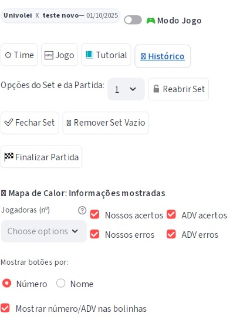
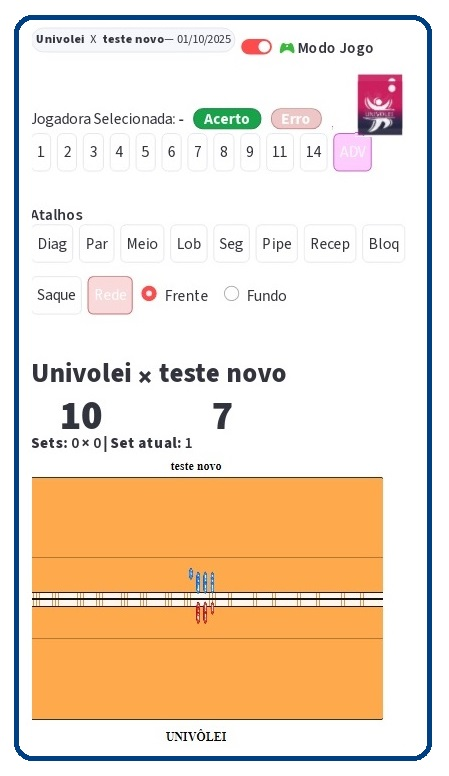
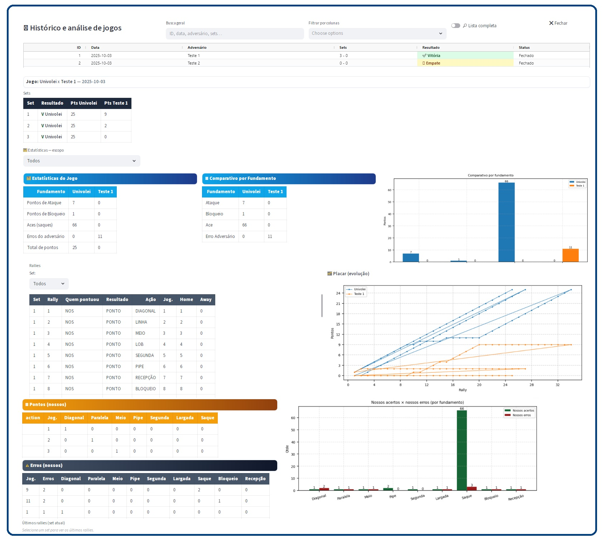
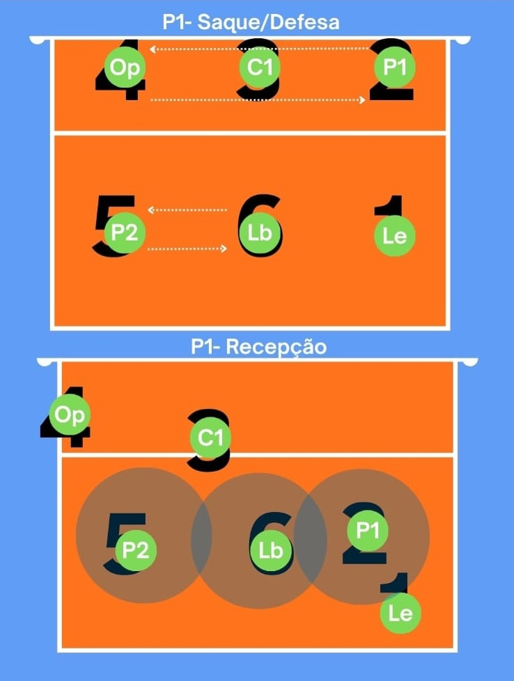
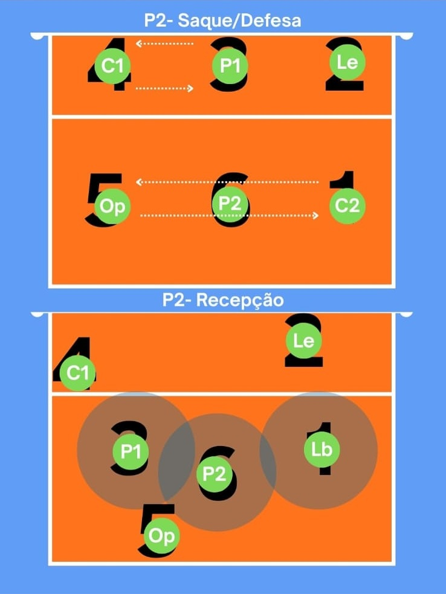
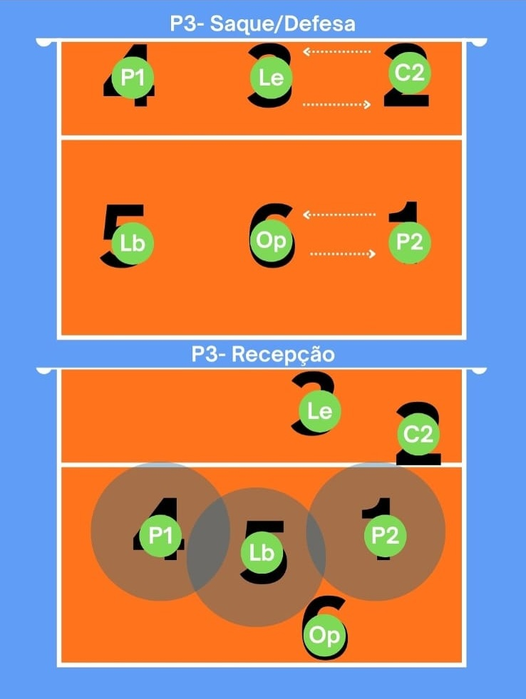
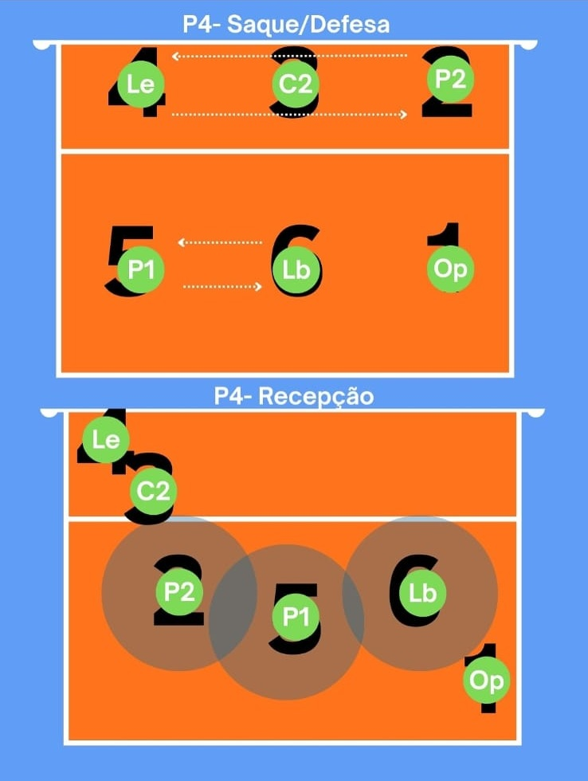
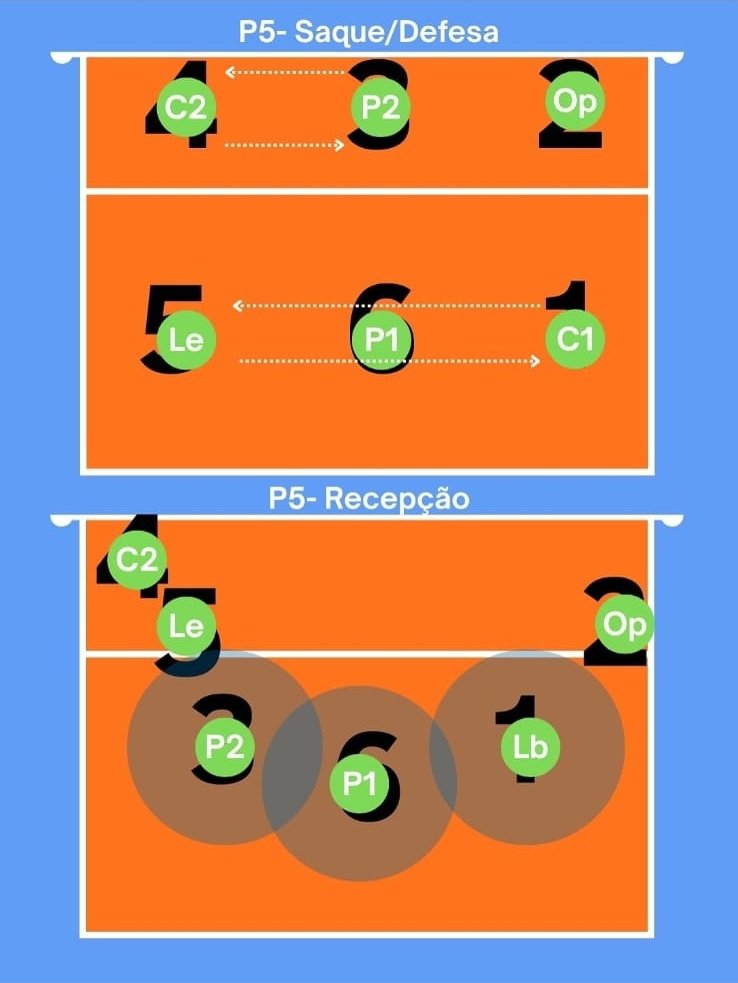
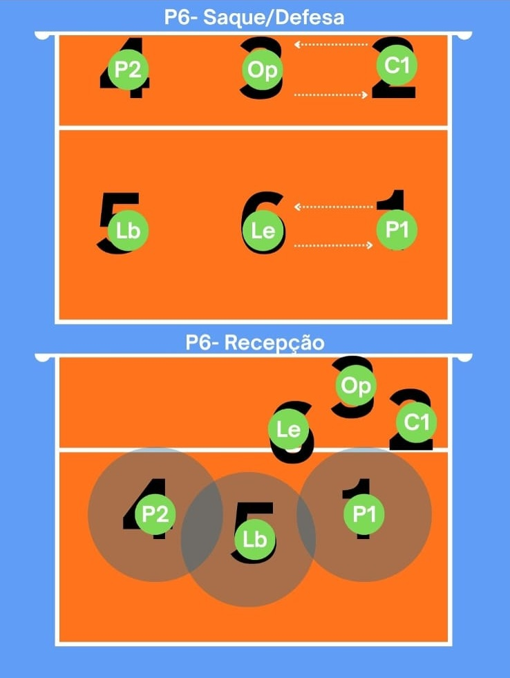

🔹 Acesso inicial
Entre no endereço https://univolei-scout.streamlit.app/.
Se houver jogo em aberto, o título e a data aparecem no cabeçalho.
Na primeira linha estão os botões principais:
- Time — cadastrar/editar o time e jogadoras.
- Jogo — iniciar ou continuar a marcação de um jogo.
- Tutorial — abre esta página.
- Histórico — análises e estatísticas de partidas anteriores.
O aplicativo realiza persistência em Excel, DuckDB e Google Sheets (quando habilitado),
garantindo backup e histórico consistentes.

🔹 Modo Jogo (principal)
O Modo Jogo é o principal local de marcação de pontos. Aqui você registra
todas as ações do rally, alimentando automaticamente as análises do Histórico.
- Botões de Jogadoras — clique na atleta do lance.
- 1º clique: Acerto ✅
- 2º clique: Erro ❌
- ADV — registra pontos do adversário.
- Mapa de Calor — clique na quadra para indicar a região da jogada.
- Placar — aparece em destaque acima da quadra para cada set.
- Gestão de Sets — abrir/fechar set, remover set vazio e finalizar partida.
Dica: você pode alternar rótulos dos botões por Número ou Nome das jogadoras.

🔹 Histórico (dashboard)
O Histórico é o dashboard central de análise de desempenho.
Você encontra a lista de partidas (com filtros), o resultado de cada uma e as métricas detalhadas.
- Lista de jogos — ID, data, adversário, sets e status (aberto/fechado).
- Resultado — destaque visual para Vitória
Derrota Empate.
- Estatísticas — evolução do placar, comparativo por fundamento, erros e mapas de calor.
Reforço: o Histórico é onde você identifica pontos fortes e fraquezas
para orientar treinos focados e melhorias ao longo da temporada.
🔹 Rodízio 5x1 — referência visual

P1 (Levantadora): posição 1 (direita do fundo); arma jogadas rápidas e cobre a defesa direita.

P2 (Oposta): ataque pela direita; apoio em coberturas e bolas de fundo.

P3 (Central): ataque rápido pelo meio e responsabilidade de bloqueios centrais.

P4 (Ponteira): atacante pela esquerda; forte no passe e coberturas.

P5 (Defensora/Ponteira): fundo esquerdo; prioridade em recepção e coberturas.

P6 (Líbero/Ponteira de fundo): fundo central; defesa principal e recepção de saque.
Coloque as imagens dentro de ./imgs/ ao lado deste arquivo.